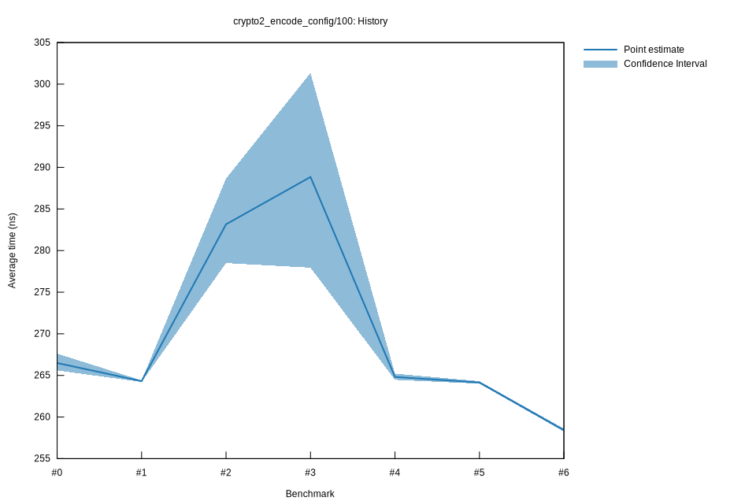

# 42022-10-15T17:10:34+03:00
|
Lower Bound |
Estimate |
Upper Bound |
| Value: |
264.47ns |
264.81ns |
265.21ns |
| Throughput: |
367.82MiB/s |
367.33MiB/s |
366.78MiB/s |
| Change in Value: |
-6.8502% |
-5.0103% |
-3.4208% |
| Change in Throughput: |
+7.3540% |
+5.2745% |
+3.5420% |
No change in performance detected.
# 32022-10-15T17:07:03+03:00
|
Lower Bound |
Estimate |
Upper Bound |
| Value: |
277.95ns |
288.85ns |
301.33ns |
| Throughput: |
349.98MiB/s |
336.77MiB/s |
322.81MiB/s |
| Change in Value: |
-5.6537% |
-3.0530% |
-0.1706% |
| Change in Throughput: |
+5.9925% |
+3.1492% |
+0.1709% |
No change in performance detected.
# 22022-10-15T16:46:13+03:00
|
Lower Bound |
Estimate |
Upper Bound |
| Value: |
278.50ns |
283.16ns |
288.65ns |
| Throughput: |
349.28MiB/s |
343.53MiB/s |
337.00MiB/s |
| Change in Value: |
+6.6691% |
+8.9436% |
+11.336% |
| Change in Throughput: |
-6.2522% |
-8.2094% |
-10.182% |
No change in performance detected.
# 12022-10-08T17:24:18+03:00
|
Lower Bound |
Estimate |
Upper Bound |
| Value: |
264.21ns |
264.31ns |
264.41ns |
| Throughput: |
368.17MiB/s |
368.03MiB/s |
367.90MiB/s |
| Change in Value: |
-0.6127% |
-0.4001% |
-0.2188% |
| Change in Throughput: |
+0.6165% |
+0.4017% |
+0.2193% |
No change in performance detected.
# 02022-10-08T17:05:25+03:00
|
Lower Bound |
Estimate |
Upper Bound |
| Value: |
265.60ns |
266.49ns |
267.62ns |
| Throughput: |
366.24MiB/s |
365.02MiB/s |
363.48MiB/s |